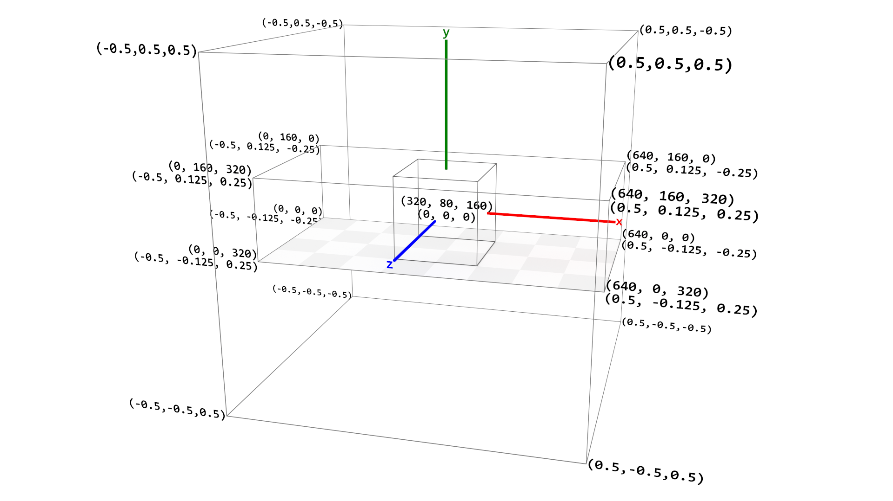

VEGA specifications ("specs") define plot size using
width and height. These coordinates are used to specify mark positions
and sizes (typically mapping data values through a scale), and map directly to pixel positions.
MorphCharts specs also define plot size using width and height, optionally
adding depth. These coordinates are also used to specify mark positions and sizes.
However, they do not map directly to pixel positions, for the following reasons:
camera, by default, a PerspectiveCamera. The position and size
of a mark on the screen will depend on camera properties such as distance and field of
view.
mark can optionally define a z-coordinate.
camera view is rendered onto a canvas defined by a width and
height. This allows the user to change the size of the image, without changing the
scene.
Since plot size no longer maps directly to pixel size, we can define plot size using arbitrary units. For example,
we could define height, width, and depth as a unit size of 1. However, since
many spec properties use VEGA defaults (e.g. fontSize) it
may be more convenient to use typical VEGA plot sizes.
MorphCharts uses a right-hand coordinate system: x increases to the right, y increases
upward, and z increases toward the viewer.
{
"width": 640,
"height": 360,
"depth": 640,
...
"marks": [
{
"type": "rect",
"encode": {
"enter": {
"x": {"value": 320},
"y": {"value": 180},
"z": {"value": 320},
"width": {"value": 32},
"height": {"value": 32},
"depth": {"value": 32}
}
}
}
]
}
Plot coordinates define the plot dimensions at the top-level of the spec, as well as the position and size of marks.
The plot in Listing 1 is 640x360x640 (WxHxD) units in
size. The mark is a 32x32x32 cube in the center of the plot at (320, 180, 320) (XYZ).
Note that mark positions and sizes are typically mapped indirectly from data values using a scale,
rather than using literal values.
Camera coordinates are defined by a unit cube which encloses the maximum plot dimension (width,
height, depth). Using camera coordinates can be convenient, as they are independent of
plot size. For example, the center of the plot is always at (0, 0, 0) in camera coordinates,
regardless of the plot size. The maximum plot dimension ranges from -0.5 to 0.5 in camera
coordinates.
A camera and light array can optionally be included in the spec, and can be defined
in either camera coordinates or plot coordinates.
"camera": {
"position": [0, 1, 2]
}
...
"lights": [
{
"type": "rect",
"position": [-1, 1, 1],
"size": 0.5
}
]
To specify camera and light properties in plot coordinates rather than camera coordinates,
use the world prefix, for example worldPosition instead of position.
If the same property is specified in both camera and plot coordinates, the camera coordinates take precedence. For
example, if position and worldPosition are both specified for a light, the light will
be positioned according to position.
| Property | Type | Description |
|---|---|---|
position |
[x, y, z] |
Camera position |
target |
[x, y, z] |
Camera look-at target |
direction |
[x, y, z] |
View direction vector (alternative to target) |
distance |
number | Spherical distance offset from position |
altitude |
degrees | Spherical elevation from horizontal plane (0° horizontal, 90° up) |
azimuth |
degrees | Spherical rotation around the Y axis (0° = +Z, 90° = +X) |
focusDistance |
number | Focus distance from position |
| Property | Type | Description |
|---|---|---|
position |
[x, y, z] |
Light position |
target |
[x, y, z] |
Light look-at target |
direction |
[x, y, z] |
Light direction vector (alternative to target) |
distance |
number | Spherical distance offset from position |
altitude |
degrees | Spherical elevation from horizontal plane (0° horizontal, 90° up) |
azimuth |
degrees | Spherical rotation around the Y axis (0° = +Z, 90° = +X) |
size |
number | Light size |
Camera position can be specified using Cartesian coordinates, or using spherical coordinates with
distance, altitude and/or azimuth. If both Cartesian and spherical
coordinates are specified, the spherical coordinates are used to offset the Cartesian coordinates. Without
Cartesian coordinates, the spherical offset is from the plot center, (0, 0, 0) (camera coordinates).
Figure 1 shows the relationship between plot coordinates and camera coordinates. The innermost bounding box shows a
cube mark positioned at the plot center (0, 0, 0) in camera coordinates, or
(width/2, height/2, depth/2) in plot coordinates. The next bounding box shows the plot dimensions in
both plot coordinates (upper value) and camera coordinates (lower value) at each vertex. Plot coordinates range from
(0, 0, 0) to (width, height, depth). The outermost bounding box shows the unit cube
representing camera coordinates, which range from (-0.5, -0.5, -0.5) to (0.5, 0.5, 0.5).
The cardinal axes are also shown.

The conversion formulae between plot and camera coordinates are:
The same applies for y (with h) and z (with d).
For sizes (e.g. light size, worldSize etc.), the conversion is simply:
The canvas size is defined by the renderer and specified in pixels. The size of the
canvas is set when creating the renderer, either implicitly from the
<canvas> element's size or explicitly via an options object:
const renderer = new WebGPURenderer.Main(canvas, {
width: 1920,
height: 1080
});Rendering coordinates are independent of plot coordinates — changing the canvas size changes the image resolution without affecting the scene.